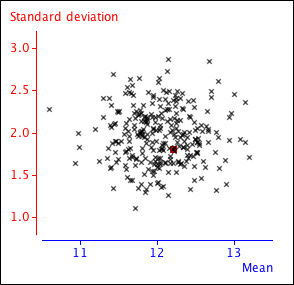

We end this section with another important result that is stated here without proof.
Independence of sample mean and variance
If \(\{X_1, X_2, \dots, X_n\}\) is a random sample from a \(\NormalDistn(\mu, \sigma^2)\) distribution, the sample variance,
\[ S^2 \;=\; \frac {\sum_{i=1}^n {(X_i - \overline{X})^2}} {n-1} \]is independent of the sample mean, \(\overline{X}\).
Although we cannot prove independence with the statistical theory that we have covered so far, it can be demonstrated with a simulation. In the scatterplot below, each cross gives the mean and standard deviation from a random sample of 20 values from a \(\NormalDistn(\mu=12,\; \sigma^2 = 2^2)\) distribution.

The scatterplot is a fairly circular cloud of crosses, so there is no tendency for large sample standard deviations to be associated with either large or small sample means. This supports the independence of the sample mean and standard deviation.